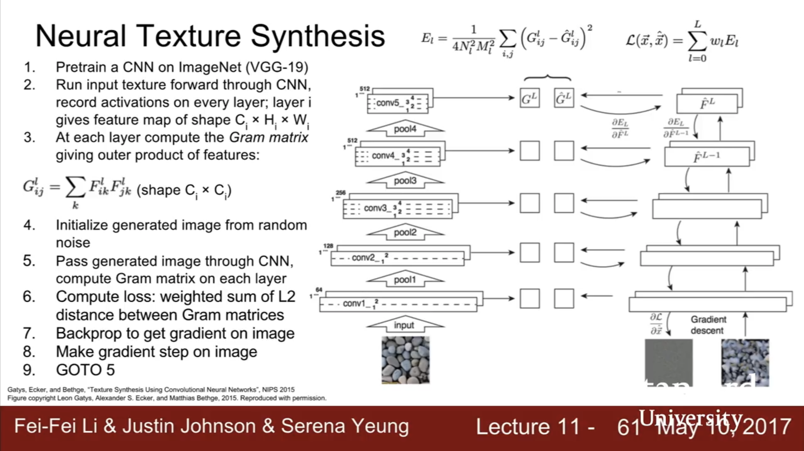

First Layer of CNN - you can just directly visualize the weights as images


Middle Layers - However, the weights don’t match to pixels in middle layers- not interpreble as images. However, we can visualize each feature activation (each channel) and see where they activate in the image. There are often 128 or 256 feature channels in some layer, most are uninterpreable in many layers but some are interpreable.
Last Layer - To visualize the last (fully connected) layer, we can run the network on many images, and collect the feature vectors generated by the last layer. For example, we can compute and visualize the nearest neighbors in the feature space using fature vectors generated by the last layer. (Appendix 1a)
Visualizing Middle Layers:
Maximally Activating Patches (For Middle Layers): Pick a layer and a channel, ie conv5 in AlexNet is 128x13x13, pick channel 17/128.
Run many images through the network, record values of chosen channel Visualize image patches that correspond to maximal activations. (Appendix 1b)
Occlusion Experiments (For Original Images): Mask part of the image before feeding to CNN, draw heatmap of probability of the actual output image (network score) at each mask location. (Appendix 1b)
Saliency Maps (For Original Images): Compute the gradient of unnormalized class score with respect to raw pixel images. This tells us, if we wiggle the pixels in the raw image, which pixels affect the class score the most (Appendix 1c)
Saliency Maps for Interpediate Features (For Middle Layers): (Using Guided Backprop) Same as saliency maps, you compute the graident of the unnormalized class score with respect to an intermediate feature. However, Images come out nicer if you only backprop positive gradients through each ReLY (guided Backprop) (Appendix 1c)
Gradient Based Modifications of Images
Gradient Ascent
Generate a synthetic image that maximally activates a neuron. We keep the network fixed but backprop to change the pixels of the image to maximize the class score. Gradient Ascent requres a pixel-level regularizer to prevent the pixels of our image from overfitting to the peculiarities of our particular network. (Appendix 1d)
I* = arg max_I f(I) + R(I)
Simple regulariser: Penalize L2 norm of generated image. See slides below for more complicated regularizer.
You can perform gradient ascent not on the raw pizels but on the FC6 latent space representation of the image and you get some really good images. (Appendix 1d)
Adversarial Examples
Start from arbitrary image, Pick an arbitrary class. Modify the image to maximize the class. The image will end up looking the same but the particular network will classify it differently. (Appendix 1d)
Image Style
DeepDream
(Appendix 1e)
Choose an image and a layer in a CNN; do
1. Forward: Compute activations at chosen layer
2. Set gradient of chosen layer equal to its activation (magnify existing features detected by the network in the image. Whatever features were found in the image at this layer, amplify these features and modify the image).
Note that this is equivalent to maximizing the L2norm of the features of that layer of the image.
3. Backward: Compute gradient on image
4. Update Image
Feature Inversion
(Appendix 1f)
Given a CNN feature vector for an image, generate a new image that
1. Matches the given feature vector
2. “looks natural” (image prior regularisation)
Tells us how much of the image’s information is stored just in the fatures at that particular layer. If you start at a very deep (low) layer in the network, most of the image can be reconstructed perfectly. As you use higher layers, a lot of edges, colors get blurred and you see more of the semantic information that causes the images to be classified to what it is come out.
Neural Texture Synthesis
(Appendix 1g)
1. Compute the Gram Matrix
Each layer of CNN gives a C x H x W tensor of features, which is interpreted as an HxW grid of C-dimensional feature vectors.
The texture of the image is defined as the average of the co-occurence of the feature vectors.
In particular, the outer product of any two C-dimensional vectors gives C x C matrix measuring co-occurence. This tells us about the co-occurence of feature activations at different spatial positions. If element i,j in the CxC matrix is large, that means that element i in the first feature vector and element j in the second feature vector are both large. This tells us which features of the feature map tend to activate together at different spatial positions (second order statustics).
The final Gram matrix (texture matrix) is the average of all HW(HW-1)/2 pairs of outer product co-occurence matrices throught the image, although practically we can just sample and keep a running average.
The Gram Matrix has thrown away all spatial information that was inside the feature volume through the averaging.
2. Run Gradient Ascent on the Gram Matrix. For every layer, compute its Gram Matrix.
3. Initiate a new image to random noise. Take the new image that you want to generate,
Pass generated image through CNN, compute gram matrix on each layer, and compute loss as the weighted sum of L2 distance between gram matrices. Backprop and update the image.
Style Transfer
(Appendix 1g)
Style Transfer take a content image and a style image and generates a new image minimizing the feature reconstruction loss (feature inversion) of the content image and the gram matrix (style) reconstruction loss of the style image.
Fast Style Transfer:
(Appendix 1g)
Problem: Style transfer requires many forward backward passes through VGG, very slow! May take ~1hr per image.
Solution: Train another neural network to train style transfer for us.
1. Train a feedforward network for each style
2. Use pretrained CNN to compute same losses as before
3. After training, stylize images using a single forward pass.
Essentially, replace the syle transfer backward pass gradient ascent procedure with a single feedforward network. This feedforward network is trained to minimize the joint content and style losses for a fixed style. During test time, we just run the target image through the feedforward network once and the stylized image will come out.
Takes a few hours to train, but once trained, can do style transfer in real time.
2017 Google Paper has one networks that can apply many styles, and can even blend styles.
Appendix 1a:
Check out high-res versions at https://cs.stanford.edu/people/karpathy/cnnembed/
Appendix 1b:
I think this is the best way to get intertations of individual filters!
Appendix 1c: Saliency Maps and Guided Backprop
Appendix 1d: Gradient Ascent
We can also use gradient Ascent to maximize not only final class scores but also the neurons of some intermediate layer.
Appendix 1e: DeepDream
Jittering the image (2 pixel works fine) is a regularizer which encourages spatial smoothness in the image
L1 normalization on the gradients prevents updates from being too crazy
Clip pixel values so that they can be visualized. (This is a projected gradient ascent where we project into the space of valid images)
Appendix 1f: Feature Inversion
Appendix 1g: Neural Texture Synthesis
1. Generate the Gram Matrix
Each layer of CNN gives a C x H x W tensor of features, which is interpreted as an HxW grid of C-dimensional feature vectors.
The texture of the image is defined as the average of the co-occurence of the feature vectors.
In particular, the outer product of any two C-dimensional vectors gives C x C matrix measuring co-occurence. This tells us about the co-occurence of feature activations at different spatial positions. If element i,j in the CxC matrix is large, that means that element i in the first feature vector and element j in the second feature vector are both large. This tells us which features of the feature map tend to activate together at different spatial positions (second order statustics).
The final Gram matrix (texture matrix) is the average of all HW(HW-1)/2 pairs of outer product co-occurence matrices throught the image, although practically we can just sample and keep a running average.
Thr Gram Matrix is essentially the covariance matrix but easier to compute.
The Gram Matrix has thrown away all spatial information that was in the feature matrix, because we averaged over all two vectors at every point in the image. Instead, it just captures the second-order co-occurence statistics for features, and this turns out to be a nice proxy for texture.
The Gram Matrix is very efficient to compute: Reshape features from C X H x W to C x HW, then Compute G = FF^T
2. Run Gradient Ascent on the Gram Matrix. For every layer, compute its Gram Matrix.
3. Take a new image that you want to generate,
Pass generated image through CNN, compute gram matrix on each layer, and compute loss as the weighted sum of L2 distance between gram matrices. Backprop and update the image.

This process produces pretty good textures!
You can compute the loss at different layers and mix it. If you use gram matrices at low layers, you get spoltches of colors. If you use higher layers, you tend to reconstruct larger structures from the original image.
Style Transfer:
Style Transfer is Texture Synthesis by Gram Matrix Matching + Feature Inversion by Feature Matching.
Style Transfers take a content image and a style image and generates a new image minimizing the feature reconstruction loss (feature inversion) of the content image and the gram matrix (style) reconstruction loss of the style image.
You can trade off the weighting between the content loss and the style loss.
It is recommended to use a high enough content layer to capture enough detail.
If you resize the style image before consrticting the gram matrix, you can control what scale of styles you want to use in the new image
You can do style transfer with multiple style images, by taking a weighted average of different gram matrices.
Fast Style Transfer
Replacing batch normalization with instance normalization improves results.
Google came up with a paper in 2017 to use one network to apply many styles (not one style per network).
Can also do style blending in real time.